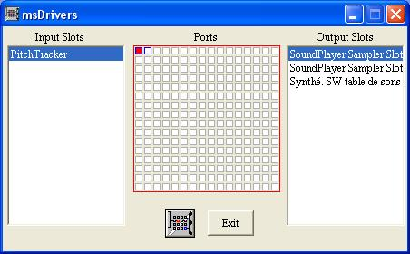

L'application msDrivers permet de configurer les périphériques MIDI utilisés depuis le logiciel. Elody utilise jusqu'a 32 cannaux MIDI, qui vont circuler à travers les ports MIDI 0 et 1. Dans la matrice centrale, on selectionne le port 0, et les périphériques MIDI en entrée (colonne de gauche) et en sortie (colonne de droite) peuvent être connectés au port correspondant. De même pour la configuration du port 1.
L'échantillonneur interne apparait comme un périphérique nommé Sound Sampler Slot 0 et Sound Sampler Slot 1 . Par défaut, il est déja connecté aux ports 0 et 1.